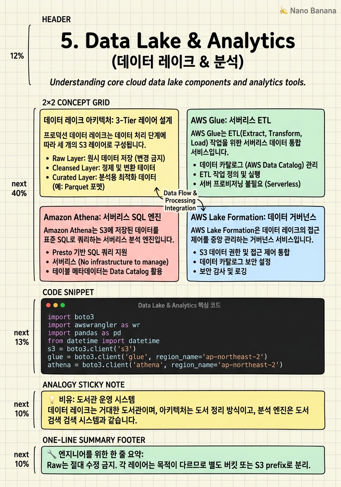

Data Lake & Analytics

🎯 학습 목표
- Glue Crawler와 ETL Job으로 데이터 파이프라인을 자동화할 수 있다
- Athena 쿼리를 파티셔닝과 Parquet 컬럼 형식으로 최적화할 수 있다
- Lake Formation으로 행·열 수준의 데이터 접근 제어를 설계할 수 있다
- Redshift Spectrum으로 S3 데이터를 Redshift에서 직접 쿼리할 수 있다
- 데이터 레이크 레이어(Raw/Refined/Curated)를 설계할 수 있다
조직의 데이터는 RDB, SaaS 애플리케이션, IoT 기기, 로그 파일 등 다양한 소스에서 다양한 형식으로 생성됩니다. 이 모든 데이터를 하나의 중앙 저장소에 모아두고 필요할 때 분석할 수 있는 구조가 데이터 레이크(Data Lake)입니다.
AWS 데이터 레이크의 중심은 Amazon S3입니다. S3는 비용이 저렴하고 거의 무한한 용량을 제공하며, 다양한 파일 형식(CSV, JSON, Parquet, ORC)을 저장합니다. 하지만 S3 자체는 데이터를 정리하고 접근을 제어하고 쿼리를 최적화하는 기능이 없습니다. 이를 위해 AWS Glue(ETL·카탈로그), Amazon Athena(서버리스 SQL), AWS Lake Formation(거버넌스), Amazon Redshift(DW 분석)가 조합됩니다.
이 챕터에서는 데이터 레이크의 계층적 설계(Raw → Refined → Curated), 각 서비스의 역할, 그리고 프로덕션 규모의 데이터 레이크를 안전하고 비용 효율적으로 운영하는 패턴을 다룹니다.
핵심 내용
데이터 레이크 아키텍처: 3-Tier 레이어 설계
프로덕션 데이터 레이크는 데이터 처리 단계에 따라 세 개의 S3 레이어로 구성됩니다.
Raw (Bronze) Layer: 소스 시스템에서 수집된 원본 데이터를 그대로 저장합니다. 절대로 수정하지 않습니다. 데이터 유실 방지를 위한 근원지로, 모든 데이터는 여기서 시작합니다.
Refined (Silver) Layer: Raw 데이터를 정제·변환한 데이터입니다. PII 마스킹, 스키마 정규화, 중복 제거, 타입 변환이 이루어집니다. Parquet 형식으로 변환하고 파티셔닝을 적용합니다.
Curated (Gold) Layer: 비즈니스 도메인별로 집계·변환한 분석용 데이터입니다. 데이터 마트(Data Mart) 개념으로, 특정 비즈니스 질문에 최적화된 형태입니다.
각 레이어 간 데이터 이동은 AWS Glue ETL Job이 담당합니다. S3 버킷 이벤트 → EventBridge → Glue Job 트리거로 데이터 수집부터 변환까지 자동화합니다.
AWS Glue: 서버리스 ETL
AWS Glue는 ETL(Extract, Transform, Load) 작업을 위한 서버리스 데이터 통합 서비스입니다.
Glue Data Catalog는 데이터 메타데이터(스키마, 파티션, 위치)를 중앙 관리하는 메타스토어입니다. Athena, Redshift Spectrum, EMR이 모두 Glue Catalog를 공유합니다. S3의 Parquet 파일 구조가 자동으로 테이블로 등록됩니다.
Glue Crawler는 S3 데이터를 자동으로 스캔하여 스키마를 추론하고 Data Catalog에 테이블을 생성합니다. 새 파티션을 자동으로 감지합니다.
Glue ETL Job은 PySpark 또는 Python Shell로 작성한 변환 로직을 서버리스 Spark 클러스터에서 실행합니다. DPU(Data Processing Unit)를 기반으로 과금하며, Glue Studio의 비주얼 편집기로 코드 없이 ETL을 구성할 수 있습니다.
Glue DataBrew는 데이터 분석가가 코드 없이 데이터를 프로파일링하고 변환할 수 있는 노코드 ETL 도구입니다.
Amazon Athena: 서버리스 SQL 엔진
Amazon Athena는 S3에 저장된 데이터를 표준 SQL로 쿼리하는 서버리스 분석 엔진입니다. 인프라 없이 사용하고 스캔한 데이터 양만 과금($5/TB)합니다.
쿼리 비용 최적화는 데이터 형식과 파티셔닝으로 달성합니다.
- Parquet/ORC: 컬럼 형식이므로 필요한 컬럼만 읽어 스캔 비용이 90% 이상 감소
- 파티셔닝: WHERE year=2026 AND month=06처럼 필터링하면 해당 파티션만 스캔
- 압축: Snappy, ZSTD 압축으로 파일 크기를 줄여 스캔량 감소
- Iceberg Table: ACID 트랜잭션, 타임 트래블, 스키마 진화를 지원하는 오픈 테이블 형식
Athena Federated Query는 S3 외에 DynamoDB, RDS, Redshift 등 다른 데이터 소스에도 SQL로 쿼리할 수 있습니다. Lambda Connector가 각 데이터 소스를 Athena에 연결합니다.
Workgroup은 쿼리별 결과 위치, 최대 스캔 비용 한도, 암호화 설정을 팀/프로젝트별로 분리합니다.
AWS Lake Formation: 데이터 거버넌스
AWS Lake Formation은 데이터 레이크의 접근 제어를 중앙 관리하는 거버넌스 서비스입니다. S3 버킷 정책과 IAM만으로는 행·열 수준의 세밀한 제어가 불가능하지만, Lake Formation은 이를 가능하게 합니다.
데이터 권한 모델: Lake Formation에서 테이블, 컬럼, 행 수준의 접근 권한을 설정하면, Athena·Glue·EMR이 이 권한을 자동으로 준수합니다. IAM과 별개로 Lake Formation 권한이 동시에 적용됩니다.
행 수준 보안(Row-Level Security): WHERE user_region = current_user_region 같은 필터를 Lake Formation에 설정하면 쿼리 시 자동으로 적용됩니다.
컬럼 수준 보안: 특정 역할에 민감한 컬럼(SSN, 신용카드 번호)을 숨기거나 마스킹합니다.
Cross-Account 접근: Lake Formation RAM(Resource Access Manager) 통합으로 다른 AWS 계정의 데이터 레이크에 안전하게 접근할 수 있습니다.
Amazon Redshift: 클라우드 데이터 웨어하우스
Amazon Redshift는 페타바이트 규모의 데이터를 분석하는 완전 관리형 컬럼 기반 데이터 웨어하우스입니다. 표준 SQL을 지원하며 BI 도구(QuickSight, Tableau, Looker)와 통합됩니다.
Redshift Spectrum은 Redshift 클러스터가 S3의 데이터를 외부 테이블로 직접 쿼리하는 기능입니다. 데이터를 Redshift로 로드하지 않고도 S3 데이터 레이크와 Redshift 내부 테이블을 조인하여 쿼리합니다.
Redshift Serverless는 클러스터 없이 Redshift를 사용합니다. RPU(Redshift Processing Unit) 기반 과금으로 간헐적 쿼리 워크로드에 적합합니다.
배포 전략: 대용량 JOIN 키 기준으로 Distribution Key를 설정하여 데이터를 노드 간 균등 분산합니다. 작은 차원 테이블은 ALL 배포로 모든 노드에 복사합니다. Sort Key는 쿼리 필터에 자주 사용되는 컬럼으로 설정하여 구역 맵(zone map) 기반 스캔 최소화를 달성합니다.
💡 비유로 이해하기
데이터 레이크를 도서관에 비유해봅시다. S3 Raw Layer는 출판사에서 납품된 책들을 그대로 쌓아두는 창고입니다. Refined Layer는 사서가 책을 분류하고 ISBN을 붙여 정리한 서가입니다. Curated Layer는 특정 주제(역사, 과학)별로 큐레이션된 전문 열람실입니다.
AWS Glue는 책의 목차와 저자 정보를 스캔하여 카탈로그 카드(Data Catalog)를 만드는 사서입니다. Athena는 도서관 검색 단말기입니다. 어떤 책이 어디 있는지 몰라도 "2025년 출간된 한국 역사책"이라는 조건으로 검색하면 즉시 해당 책을 찾아줍니다.
Lake Formation은 열람 권한 시스템입니다. 일반 회원은 일반 서가만, 연구원은 특수 자료실까지 접근할 수 있습니다. Redshift는 사서가 미리 분석해둔 "통계 연보"입니다. 원본 책을 매번 찾아 분석하는 것보다 훨씬 빠르게 답을 얻을 수 있습니다.
💻 코드 예시
Glue ETL Job으로 S3의 JSON 데이터를 Parquet으로 변환하고, Athena로 최적화된 쿼리를 실행하는 패턴입니다.
import boto3
import awswrangler as wr
import pandas as pd
from datetime import datetime
s3 = boto3.client('s3')
glue = boto3.client('glue', region_name='ap-northeast-2')
athena = boto3.client('athena', region_name='ap-northeast-2')
# 1. AWS Wrangler로 S3 JSON → Parquet 변환 및 Glue Catalog 자동 업데이트
def transform_to_parquet(
source_s3_path: str,
database: str,
table: str,
partition_cols: list[str]
) -> None:
# JSON 데이터를 pandas DataFrame으로 읽기
df = wr.s3.read_json(path=source_s3_path)
# 데이터 정제
df['event_time'] = pd.to_datetime(df['event_time'])
df['year'] = df['event_time'].dt.year
df['month'] = df['event_time'].dt.month
df['day'] = df['event_time'].dt.day
df = df.drop_duplicates(subset=['event_id']) # 중복 제거
# Parquet으로 S3에 저장 + Glue Catalog 자동 등록
result = wr.s3.to_parquet(
df=df,
path=f's3://my-datalake/refined/{table}/',
partition_cols=partition_cols, # ['year', 'month', 'day']
dataset=True,
database=database,
table=table,
compression='snappy', # 쿼리 비용 절감
mode='append'
)
print(f'Written {len(df)} rows: {result}')
# 2. Athena 쿼리 실행 및 결과 반환
def run_athena_query(query: str, database: str) -> pd.DataFrame:
result = wr.athena.read_sql_query(
sql=query,
database=database,
ctas_approach=True, # CTAS로 대용량 결과 처리 최적화
s3_output='s3://my-datalake/athena-results/',
workgroup='data-team'
)
return result
# 3. Glue Crawler 실행 (신규 파티션 자동 감지)
def run_crawler(crawler_name: str) -> None:
glue.start_crawler(Name=crawler_name)
print(f'Crawler {crawler_name} started')
# 실행 예시
transform_to_parquet(
source_s3_path='s3://my-datalake/raw/events/2026/06/',
database='my_database',
table='user_events',
partition_cols=['year', 'month', 'day']
)
# 파티션 필터를 활용한 비용 최적화 쿼리
df = run_athena_query(
query="""SELECT user_id, COUNT(*) AS clicks FROM user_events
WHERE year=2026 AND month=6 AND event_type='click'
GROUP BY user_id ORDER BY clicks DESC LIMIT 100""",
database='my_database'
)
print(df.head())awswrangler(AWS SDK for Pandas)는 Glue Catalog와 Athena를 pandas 인터페이스로 사용하는 라이브러리입니다. to_parquet의 dataset=True 옵션이 Glue Catalog를 자동 업데이트합니다. partition_cols=['year','month','day']는 Athena 쿼리 시 날짜 필터로 스캔 범위를 극적으로 줄입니다. ctas_approach=True는 쿼리 결과를 CTAS(Create Table As Select)로 처리하여 대용량 결과를 효율적으로 반환합니다.
🏭 현업에서의 평가
✅ 시니어가 보는 것
- 파티셔닝 전략과 Athena 쿼리 비용 절감 수치 제시
- Glue Catalog와 Lake Formation의 역할 구분
- 데이터 레이크 레이어(Raw/Refined/Curated) 설계 근거
- Redshift vs Athena 선택 기준 (빈도, 복잡도, 비용)
- 데이터 품질 검증(Great Expectations, Deequ) 파이프라인 통합
⚠️ 레드 플래그
- 모든 데이터를 Raw 레이어에서 직접 쿼리 — 변환 없는 데이터 레이크는 '데이터 늪(Data Swamp)'
- S3에 CSV로만 저장 — Parquet 대비 10배 이상 비용 차이
- 파티셔닝 없는 대용량 테이블 — Athena 쿼리가 전체 데이터를 스캔
- Lake Formation 없이 S3 버킷 정책으로만 접근 제어 — 컬럼·행 수준 보안 불가
🎤 예상 인터뷰 질문
- 100TB의 S3 데이터에 Athena로 쿼리할 때 비용을 최소화하는 설계를 설명해주세요.
- Redshift와 Athena를 같은 조직에서 함께 사용하는 이유는 무엇인가요?
- 데이터 레이크에서 PII 데이터를 안전하게 관리하는 방법을 설계해주세요.
✨ 핵심 요약
Raw → Refined → Curated 3-Tier가 표준
Raw는 절대 수정 금지. 각 레이어는 목적이 다르므로 별도 버킷 또는 S3 prefix로 분리.
Parquet + 파티셔닝 = Athena 비용 90% 절감
CSV → Parquet 전환만으로도 스캔 비용이 5-10배 감소. year/month/day 파티셔닝은 필수.
Glue Data Catalog가 모든 서비스의 메타스토어
Athena, Redshift Spectrum, EMR이 같은 카탈로그 공유. 한 번만 정의하면 모든 서비스에서 사용.
Lake Formation = 행·열 수준 접근 제어
S3 버킷 정책으로는 불가능한 세밀한 보안. GDPR·HIPAA 대응의 핵심 도구.
Athena는 ad-hoc, Redshift는 반복 복잡 쿼리
간헐적 탐색 쿼리는 Athena(스캔당 과금). 정규 리포트·복잡 조인은 Redshift(클러스터 고정 비용).
Redshift Spectrum으로 DW와 Data Lake 통합
Redshift에 모든 데이터를 로드하지 않고, S3의 대용량 히스토리 데이터를 외부 테이블로 직접 조인.
Iceberg로 데이터 레이크를 ACID로
Update/Delete/Time-travel을 S3에서 지원. 규정 준수(Right to Erasure)와 데이터 수정이 필요한 경우 필수.
AWS Wrangler(awswrangler)로 개발 생산성 향상
boto3의 저수준 API 대신 pandas 친화적 인터페이스로 Athena·Glue·S3를 쉽게 연동.